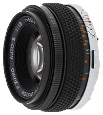

TIM ENDERSBY
CAMERAS
Canon 60D

The Canon 60d is my personal camera, and the one used for all of the picture and most of the video on this site. It has a 18MP APS-C size sensor, which can also shoot 1080p video. This camera is in the "prosumer market" meaning that it has most of the professional fetures that allow me to fine tune my photos.
Canon T3i

The Canon T3i is very similar to my Canon 60d, but with a few missing features that can make it hard to take good photos and video. The 60d and the T3i both have identical sensors however, so that are capable of producing almost the same results. This camera was used as a second camera in many of the videos I produced for Friendship Baptist Church.
LENSES
Canon EF-S 18-55mm f/3.5-5.6 IS II

This is the main lens I use on both the 60d and the T3i. It's not an amazing lens but it gets the job done. This is the kit lens, which means it is the lens that usualy comes with the camera. This lens is a zoom lens, nd can soom from 18-55mm, and open up to an apeture of f/3.5 when at 18mm, and f/5.6 at 55mm. This lens also has IS (Image Stabalization) which makes it easier to shoot handheld.
Olympus 50mm f1.8
This is my favorite of the lenses that I own. It produces beautiful shots with shallow depth of field. I do not use it as often as it does not have autofocus or electric aperture. It also does not have any image stabilization so it is harder to use with handheld video. Since it is a Olympus lens, built for film cameras, and is not built for Canon DSLRs, I have to use an adapter to attach it.
ACCESSORIES
Tripod

This is one of my favorite tools as it allows me to take steady nature shots. Almost every photo on my places page was taken using this tripod. This specific ZOMEi Z818 Tripod allows me to put the camera is almost any position I want. It also transforms into a monopod, which is very useful in quick paced situations, especially for video.
Shutter Release

This is a simple device that can plug into my camera, and allow me to push and hold the shutter button while not touching, and potentially shaking the camera. This is especially useful with late night photoshoots of stars where shaking the camera at all would ruin the whole shoot.
Battery Grip

The battery grip attached to the bottom of my Canon 60d, and holds two batteries, allowing me to have twice the power. It also adds a shutter button and dial for when I hold the camera in portrait mode.
Microphone

For most of my shoots in the studio at Friendship Baptist Church, I use one of these Audio-Technica ATR3350 Lav Microphones. They can either be plugged into the camera, or using an adapter, plugged into a phone. They provide decent audio quality at a low price.